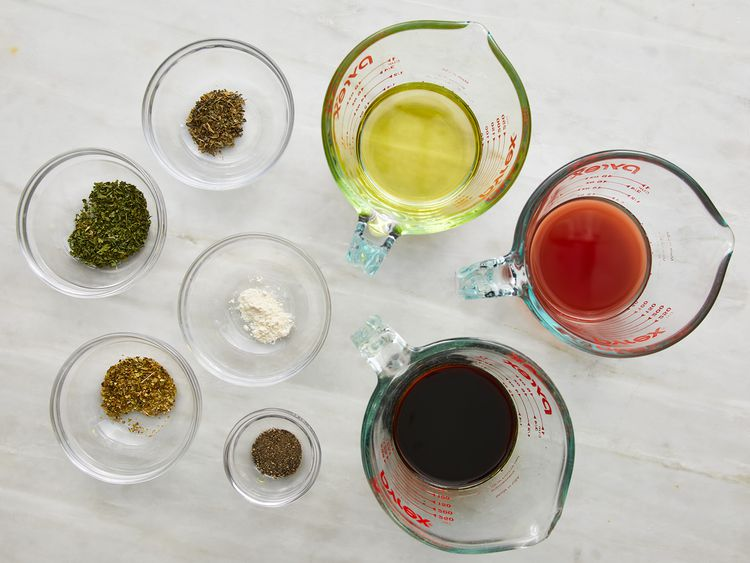
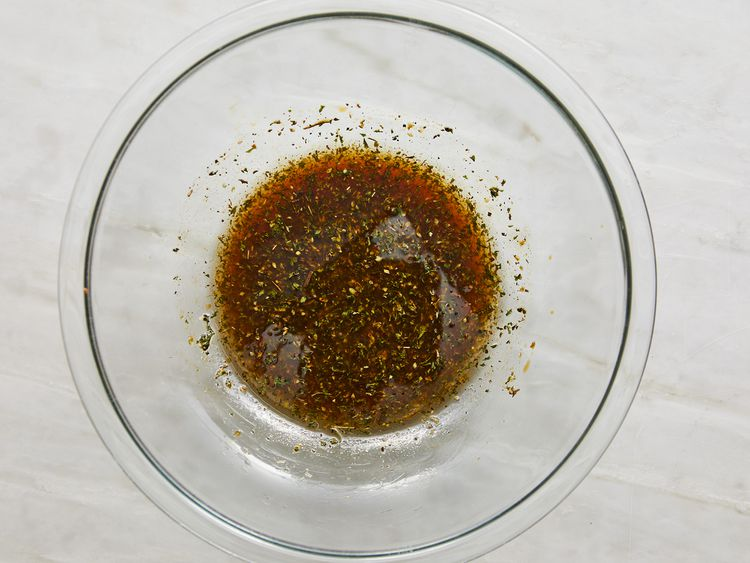
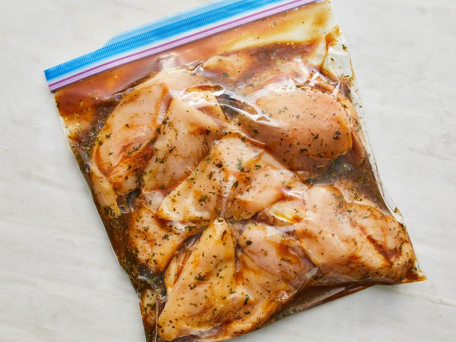

Grilled Chicken Marinade
This top-rated grilled chicken marinade recipe ensures perfectly tender, juicy, and flavorful chicken every time. Taken from Allrecipe site. By Jennifer.
Ingredients
- 0.25 cup red wine vinegar
- 0.25 cup reduced-sodium soy sauce
- 0.25 cup olive oil
- 1.5 tsps dried parsley flakes
- 0.5 tsp dried basil
- 0.5 tsp dried oregano
- 0.25 tsp garlic powder
- 0.25 tsp ground black pepper
- 5 skinless, boneless chicken breasts, thinly sliced
Steps
- Gather all ingredients.

- Whisk vinegar, soy sauce, olive oil, parsley, basil, oregano, garlic powder, and black pepper together in a bowl.

- Pour into a resealable plastic bag. Add chicken, coat with the marinade, squeeze out excess air, and seal the bag. Marinate in the refrigerator, 2 to 4 hours.

- Preheat grill for medium-low heat and lightly oil the grate. Drain and discard the marinade.
- Grill chicken on the preheated grill until no longer pink in the center, 4 to 5 minutes per side. An instant-read thermometer inserted into the center should read at least 165 degrees F (74 degrees C).
Home